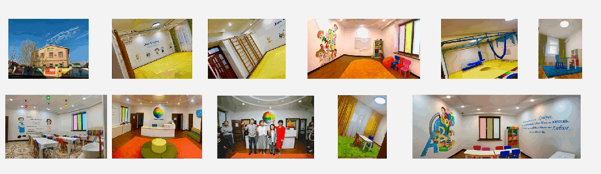

О фонде
Urpaq Inclusive создает среду, где помощь становится системой.
Мы объединяем терапию, обучение специалистов, поддержку родителей и социальные инициативы, чтобы дети с особенностями развития могли раскрывать потенциал.

Миссия фонда
Создавать среду, где дети с особенностями развития могут получать профессиональную поддержку, развивать самостоятельность и быть принятыми обществом.
ABA-терапия
Системная работа с поведением, коммуникацией, академическими и бытовыми навыками.
Сенсорная интеграция
Помощь детям с сенсорными трудностями и регуляцией поведения.
Логопедия и коммуникация
Развитие речи, альтернативной коммуникации и навыков взаимодействия.
Работа с семьей
Консультации, сопровождение и обучение родителей для единой развивающей среды.
Форматы работы центров
Четыре центра - один профессиональный подход.
Jas Urpaq Kids
Звездная 39Ранняя поддержка и базовые навыки.
Eventum Junior
Балалар 36Подготовка к школе, академические навыки и трудотерапия.
Jas Urpaq Group
Звездная 35Полный день и развитие самостоятельности.
Eventum
Балалар 21Индивидуальные занятия: ABA, логопед, сенсорная интеграция, нейропсихолог.